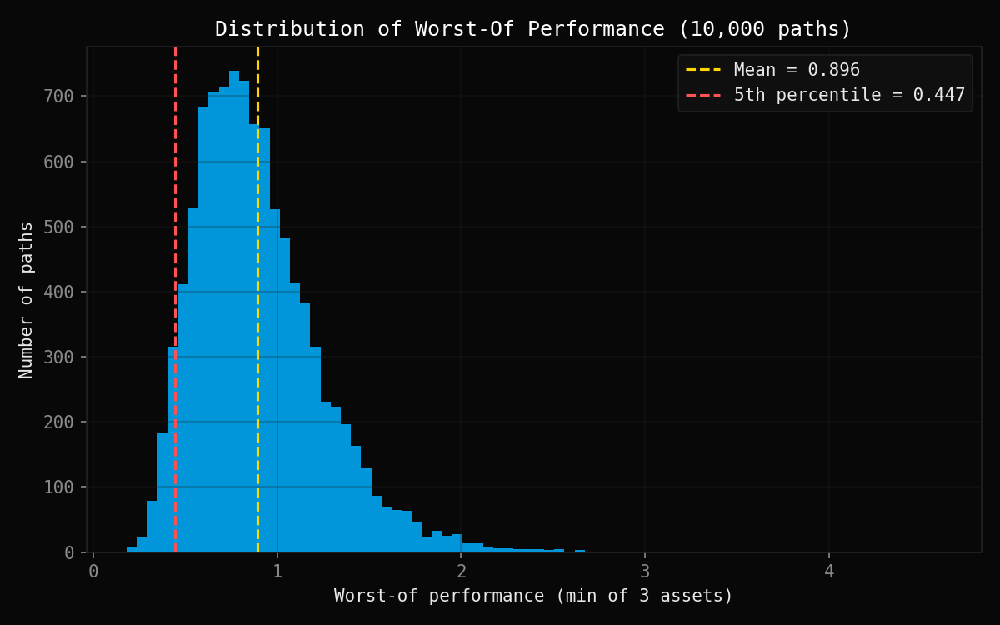
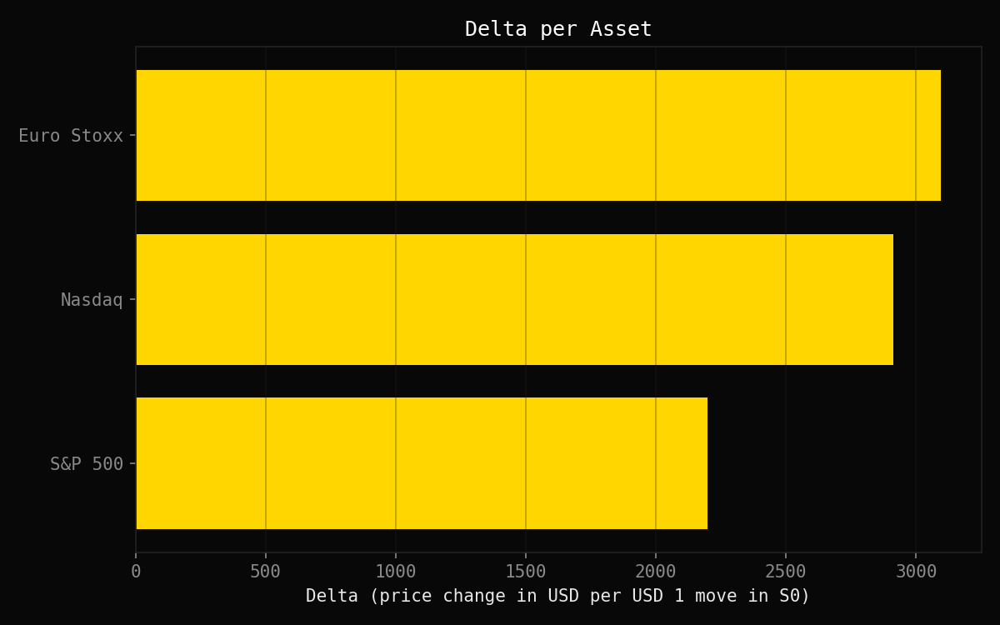
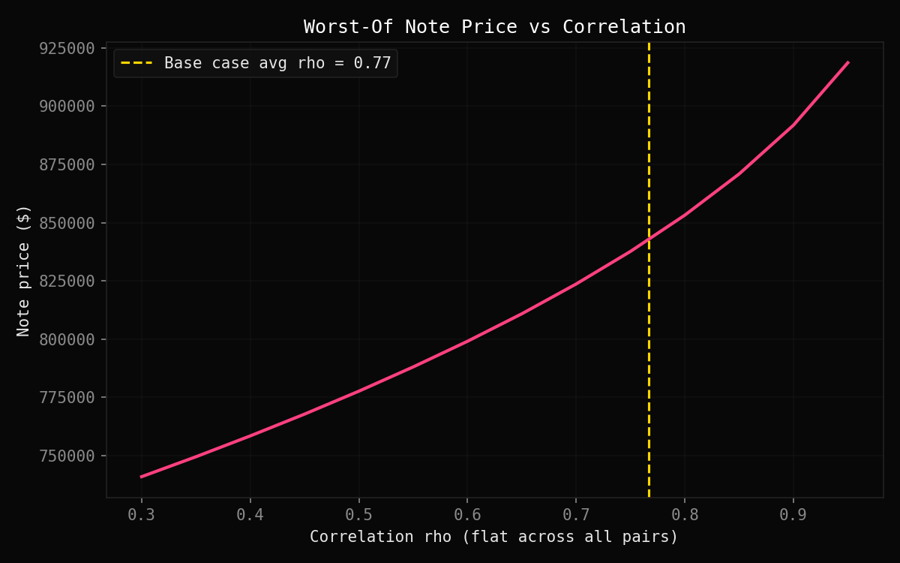

Worst-Of
Basket Note
Monte Carlo pricing of a worst-of basket note on three correlated equity indices — Cholesky correlation structure, per-asset Delta via common random numbers, and a price-vs-correlation sensitivity study. No QuantLib.
Structured products are packaged by banks to offer investors a specific risk-return profile — often yield enhancement in exchange for taking on a particular exposure. Worst-of basket notes are among the most widely issued equity structured products: instead of betting on a single underlying, the investor's payoff depends on whichever asset in a basket performs worst.
The key insight is that a worst-of note is implicitly short correlation. When assets move together, the worst performer stays close to the average and the note pays well. When they diverge, one asset lags badly and drags the payoff down. Structurers who sell the note are effectively selling correlation to the bank — which is why understanding the correlation sensitivity is central to pricing and risk-managing this product.
There's no closed-form formula for the minimum of several correlated lognormals, so Monte Carlo is necessary. This project builds the full pricer from scratch: correlation structure via Cholesky, terminal GBM simulation, per-asset Delta via common random numbers, and a price-vs-rho sensitivity study.

WORST-OF PERFORMANCE DISTRIBUTION — 10,000 paths
A worst-of basket note pays the return of the worst-performing asset. It is structurally short correlation: less correlation means more dispersion, a lower minimum, a cheaper note.
The distribution is right-skewed — the mass concentrates below 1 (losses) with a long tail of scenarios where all three assets perform well. Mean = 0.896, 5th percentile = 0.447.
Each asset's Delta is computed by bumping $S_i(0)$ by +1% with the same random seed (common random numbers — isolates the bump from MC noise).
Euro Stoxx carries the largest Delta despite a mid-range vol (22%): its lower correlations to the other two make it the worst performer most often — and therefore the payoff driver.

DELTA PER ASSET — common random numbers

PRICE VS CORRELATION ρ — base case marked
Price increases with correlation — high correlation keeps the worst performer close to the pack. The chart quantifies the short-correlation exposure in dollar terms.
SOURCE CODE
Full implementation on GitHub — correlation.py, simulation.py, pricing.py, sensitivities.py.